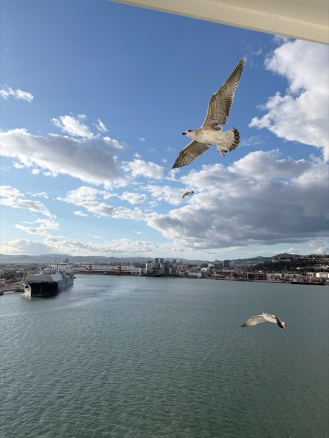
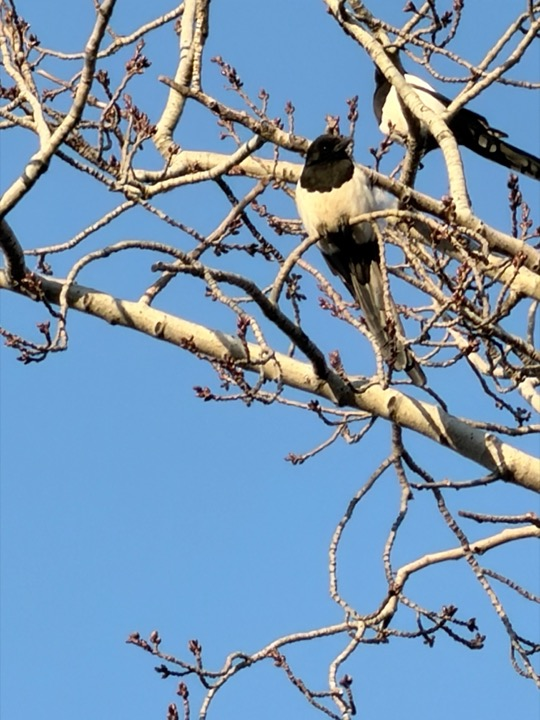
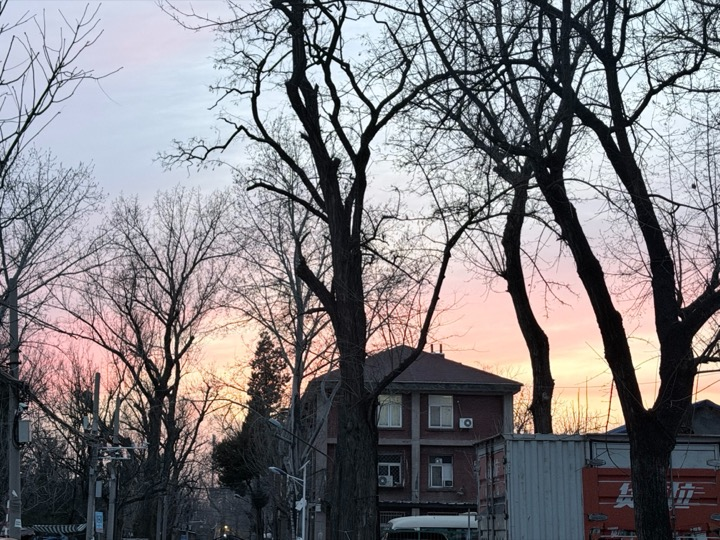
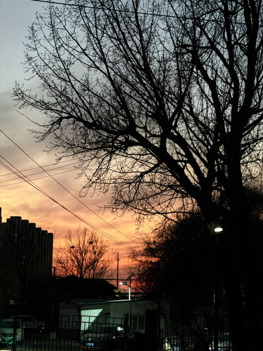

孙瑞案例集
ABOUT
我是一名以策略导向作为核心工作方向的品牌主理人，长期工作在品牌活动、发布会、展区展厅、公关传播与整合营销的第一线。我擅长把商业目标、产品信息、品牌语境、预算条件和现场限制，组织成一套可以被客户理解、被团队推进、被现场承接的美学系统。
从老牌 4A 到上市公司，十五年的工作积累让我能够快速抓住客户的核心特点，并从战略层级推动活动进入更深的执行转化。2022 年起，我开设创意工作室，四年间参与 150+ 个跨行业公关与活动项目，覆盖汽车、科技、平台、消费、文旅、金融、游戏、企业大会等类型，也在其中持续承担方案推进、执行协同与现场统筹工作。
我也享受这个过程：通过策略判断、创意表达、视觉气质、现场秩序和传播出口的融合，帮助品牌完成更准确的推广、公关传播与公众沟通；通过语言与视觉的链接，让更多品牌走向大众，把工作变成有审美、有秩序、有行动结果的公共经验。
服务于顶尖品牌与平台客户，包括百度、快手、爱奇艺、BOE、TCL、小鹏、小米、iCAR、比亚迪、抖音电商、联想、传祺、岚图等。不同规模和行业的项目训练了我的判断力：在复杂需求中识别关键问题，在多方协作中建立清晰路径，并把策略、创意与执行结果稳定连接起来。
SKILLS
技能
洞察力
Insight
极具穿透力的判断能力，能够在复杂信息中迅速抓住关键变量，对项目本质有清晰直觉式判断。
VISUAL LAB
个人影像记录
这里放一部分个人拍摄照片，作为视觉习惯和素材观察的补充。
这部分不承担履历说明功能，只保留城市、空间、风景和图像质感的日常记录。



